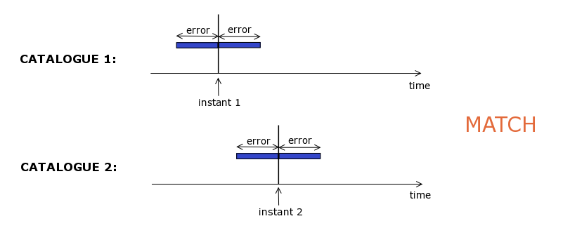
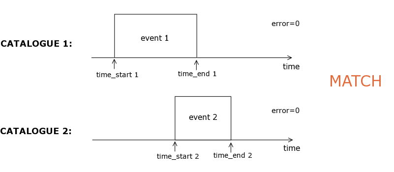
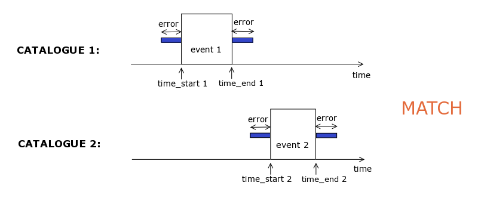

Time Cross Matcher
Summary
This tool allows you to cross match 2 catalogues based on time. It is launched from the Application Launcher.
1. Background
Time cross matching aims to identify time overlaps between entries in two catalogues. Two typical use cases can be identified, as described in Secs. 1.1 and 1.2 below. More complex types of cross matching are also possible.
1.1 Time Cross Matching instants
A user has 2 catalogues of observations containing some time information, typically the observation's timestamp, and wants to identify entries in the first catalogue that have a simultaneous observation in the second one. An error needs to be given to specify the meaning of 'simultaneous' here.

1.2 Time Cross Matching intervals (events)
Here a user has two catalogues of 'events', containing time information on both the start and end of the events, i.e. describing time intervals. An error for the cross matching may be specified.
Error=0:

Nonzero error:

2. Input and output of Time Cross Matcher
2.1 Input
The Astrogrid Time Cross Matcher (TXM) currently takes 2 catalogues as input. The order in which the 2 catalogues are presented to the TXM is important: the first catalogue, is called the Target, and the second one the Match. The TXM goes through each of the entries in the Target, and identifies if any matching entries can be found in the Match.
The two catalogues should be input to the TXM in Votable format. (If the catalogues are not in Votable format: use the Topcat application to import a file in ascii or csv format, and then save as Votable. The ascii file to be imported into Topcat should have header comments preceded by # . The last comment line in the header should be of the form '# col1name col2name col3name ' so that meaningful column names are written into the Votable.)
The input Target and Match Votable should be loaded into the user's MySpace.
The Votables to be time cross matched should contain time columns in any of the following formats: ISO (ISO 8601 format, eg '2002-07-28T00:00:00.000'); MJD (Modified Julian Day) or JD (Julian Day). The time format does not need to be the same in the two catalogues.
Note: if your 2 catalogues have numeric values for time (eg MJD or decimal year etc) with the same format in both tables, you can do a Time Cross Match Instants operation (as described in Sec 1.1) directly within Topcat.
The TXM requires the user to manually input the names of the columns in the Votable to be used for time cross-matching. For example, for the case of the TXM Intervals tool, the name of the column containing start times in the Target (parameter called: Target time-start column) will need to be specified, and similarly for the other columns required.
Finally, the error to be used needs to be input. Allowed units for the error are: d (days), h (hours), m (minutes) and s (seconds).
2.2 Output
The TXM produces by default 4 outputs:
- All targets plus matches: a table with all the entries of the Target votable, and, next to the entries that had a match in the Match votable, the matching entries from the Match VOtable. (This table contains all columns from the Target (prefixed by T1) plus all columns from the Match (prefixed by T2)). If an entry in the Target has more than 1 match, it will be listed in this table as many times as it has matches.
- Only targets with matches: a table with only the rows of the Target that had a match (this table has exacly the same columns as the original Target).
- Only target without matches:a table with only the rows of the Target that did not have a match (this table has exacly the same columns as the original Target).
- Log file.
As an example, below is a screenshot of the input and output parameters for TXM Intervals.
3. Selecting and launching TXM
From the Workbench, click on Application Launcher, enter txm in the search box and click on Search. This will display a list of applications that match the search. Clicking one of the names in the list displays registry information on the application.
Depending on the type of cross matching required, select either Time Cross Match Instants, or Time Cross Match Intervals, or Interval vs Instant Time Cross Matcher (this also allows Instant vs Interval), or the generic Multi-Purpose TXM. The latter has the most complex interface, allowing any of the above types of Time Cross Matching.
To select the required TXM, click on the box to the left of the name. This takes you to a new window where inputs to the application can be specified. (To go back to the list, click on Chooser).
To select the Target and Match votables, click on the box under Ref? in the corresponding row, and point to the required votables in MySpace. To type in column names required, double click on the box under Value and type in. Similarly for the error boxes.
To launch the application, click on the green icon at the top. If prompted to choose the CEA server, choose: ivo://uk.ac.le.star/TXM.
4. Tool authors
The TXM tool was developed by Patricio Ortiz (pfo@star.le.ac.uk) with input from Silvia Dalla (s.dalla@manchester.ac.uk).
Author: Silvia Dalla, s.dalla@manchester.ac.uk
Last revised : 5 June 2006